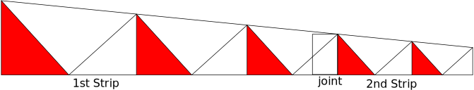

How to Assemble Printer Paper Curlicue
- Cut out the strips carefully.
- Pre-crease the slanted edges. The
edges on the coloured triangles are valley folds.
The edges on the white triangles are mountain folds.
- The rectangles on the left of the strips
are to be attached to the end of the previous strips.
- Make sure the rectangles are on top as
shown in the figure below. (Put glue on the bottom
of the paper.)
- Note only the parts that show are coloured.

Folding instructions are in Curlicue: Kinetic Origami by Assia Brill ISBN-13:978-1494234935.
After we cut one strip we can start folding until we reach the last 2 or
3 cells. Then glue the next strip and continue to fold.
Home